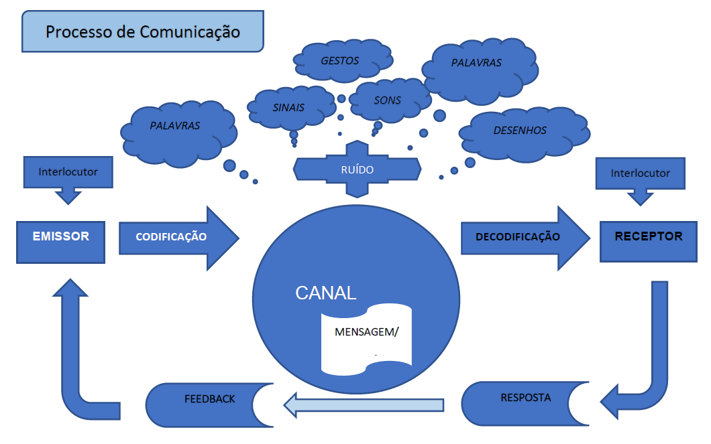
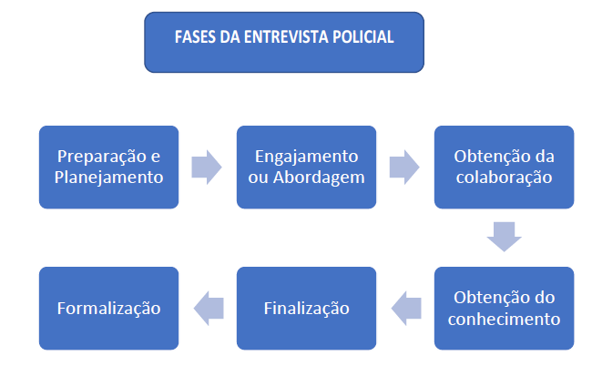
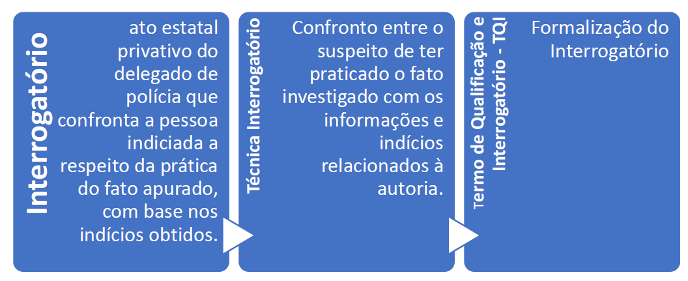

As fontes humanas continuam sendo um dos pilares da investigação policial. Apesar dos riscos de manipulação ou falsas informações, o uso responsável, ético e controlado dessas fontes é fundamental para o sucesso das investigações, sobretudo em crimes complexos e organizações criminosas. O desafio está em equilibrar a eficiência investigativa com a legalidade e proteção de direitos, de modo que as informações obtidas possam ser convertidas em provas válidas e eficazes no processo penal.
A obtenção de dados oriundos da pessoa (fonte humana) é um meio de investigação que merece zelo, critério e técnica, considerando seu grande emprego nas investigações em curso e a fragilidade das relações humanas.
Este tópico tratará superficialmente das nuances afetas a esse tipo de fonte de dados, sendo que há ações de capacitação e cursos específicos na Academia Nacional de Polícia que tratam de entrevista e interrogatório ao aprofundar no tema da gestão de fontes humanas.
Incluem-se nessa forma de obtenção de dados o seguinte rol exemplificativo: a entrevista, a qualificação e o interrogatório, a acareação, o depoimento, a declaração, a reinquirição, os termos de reconhecimento de pessoa ou coisa, a obtenção de descrição de traços fisionômicos para fins de confecção de retrato falado (conforme tópico específico do Módulo V) e a colaboração premiada, medida especial e mais complexa que será tratada em capítulo próprio, nos meios extraordinários de obtenção de prova.
As fragilidades desse meio de obtenção de prova incidem sobre todas as formas de obtenção descritas acima, uma vez que a vulnerabilidade pode se dar tanto do lado da pessoa detentora do dado, com seus interesses (vítima, colaborador, indiciado, parentes, etc.) ou com outras fragilidades (memória, percepções, história pessoal, etc.), quanto do lado do policial encarregado da obtenção e que recebe o dado (dificuldades na compreensão, preconceitos, raciocínio indutivo, viés da confirmação, etc.). Entretanto, para aprofundamento dessas vulnerabilidades, recomenda-se o estudo aguçado e sugere-se leitura de nota técnica encaminhada pela Polícia Federal ao Supremo Tribunal Federal, à época do julgamento da ADI nº 5508.
Como a forma de obtenção dos dados se dá por meio do contato do policial com a pessoa detentora da informação, alguns pontos são comuns e merecem atenção.
Comunicação é um processo que envolve a troca de mensagens entre inter locutores por meio de gestos, palavras, expressões faciais, objetos e adornos, no qual se destacam três elementos: os sujeitos, o conteúdo e o canal utilizado para a comunicação.
Na comunicação estão envolvidos, necessariamente, ao menos dois sujeitos, denominados interlocutores, que assumem o papel de emissor e receptor da mensagem, alternadamente, ao longo do processo de interação.
O objeto ou conteúdo da comunicação é a mensagem, conjunto de informa ções, que se pretende transmitir ao interlocutor.
Para transmitir a mensagem, esta é decodificada não somente por palavras, comunicação verbal (que em sentido amplo pode ser descrita como o que é falado e, em sentido estrito, na forma como é falado, considerada, por exemplo, entonação de voz), mas também por símbolos, gestos e expressões, concebidos enquanto comunicação não verbal. Em síntese, o meio de decodificação, também denominado canal, pode ser de dois tipos: verbal e não verbal.

Figura 41 - Processo de comunicação.
Ao se referir ao processo de comunicação, não se pode esquecer que há ruídos e, até mesmo, um contexto social e cultural que o influencia, cabendo ao policial entrevistador se inteirar do universo relacionado à diligência, recomendação essa producente, principalmente quando considerada a diversidade cultural da maioria dos policiais em relação às suas lotações.
A construção de vínculos interpessoais é uma habilidade essencial na atividade policial, especialmente nas operações que envolvem fontes humanas, entrevistas, infiltrações e negociações. Em muitos casos, a eficácia da coleta de informações depende diretamente da capacidade do agente de estabelecer uma relação de confiança com o interlocutor. Nesse sentido, o conceito da Fórmula da Amizade, desenvolvido por Jack Schafer, ex-agente especial do FBI e especialista em comportamento humano, oferece uma estrutura prática e eficaz para promover conexões genuínas e produtivas.
Segundo Schafer, a amizade não é somente um fenômeno espontâneo, mas pode ser estimulada por meio de comportamentos específicos que ativam meca nismos psicológicos de aproximação. A fórmula proposta por ele é composta por três elementos fundamentais: Fórmula da Amizade = Proximidade + Frequência + Duração + Intensidade
Esses componentes, quando combinados, aumentam significativamente a probabilidade de que uma relação interpessoal evolua para um vínculo de confiança, condição essencial para o sucesso em operações que dependem da colaboração voluntária de indivíduos.
A proximidade refere-se à presença física ou emocional entre o agente e a fonte. Quanto mais próximo o agente estiver, seja por meio de encontros presen ciais, conversas frequentes ou demonstrações de interesse genuíno, maior será a sensação de familiaridade. No contexto policial, isso pode ser observado em abordagens discretas, visitas regulares ou mesmo em interações informais que ocorrem em ambientes comuns à fonte.
A frequência diz respeito à repetição dos contatos. Relações humanas se fortalecem com a constância. Um agente que interage com a fonte de maneira recorrente, mesmo que brevemente, constrói uma base de reconhecimento e previsibilidade, elementos que favorecem a confiança. Essa frequência pode ser planejada estrategicamente, com visitas regulares, mensagens curtas ou contatos indiretos que mantenham o vínculo ativo.
A duração está relacionada ao tempo dedicado a cada interação. Conversas mais longas e aprofundadas permitem que o agente conheça melhor a fonte, suas motivações, medos e valores. Esse tempo de qualidade é essencial para que a fonte se sinta ouvida e compreendida, contribuindo para o fortalecimento do vínculo.
Por fim, a intensidade envolve o grau de envolvimento emocional e pessoal na relação. Quando o agente demonstra empatia, compartilha experiências, valida sentimentos ou oferece apoio em momentos difíceis, ele cria uma conexão mais profunda. Essa intensidade não precisa ser invasiva, mas deve ser autêntica e respeitosa, permitindo que a fonte perceba o agente como alguém confiável e acessível.
A aplicação da Fórmula da Amizade na atividade policial deve ser efetuada com responsabilidade e ética. O objetivo não é criar condições reais para que a fonte se sinta segura e disposta a colaborar. Em operações de inteligência, essa abordagem pode ser decisiva para transformar um contato inicial em uma fonte estável e produtiva.
Além disso, a fórmula pode ser utilizada para avaliar o progresso da relação com a fonte. Se os elementos de proximidade, frequência, duração e intensidade estiverem presentes e bem dosados, é provável que a relação esteja se conso lidando. Caso contrário, o agente pode ajustar sua estratégia de aproximação, sempre respeitando os princípios, limites legais e morais da função policial.
A atuação policial, especialmente nas atividades de inteligência e obtenção de informações por meio de fontes humanas, exige mais do que técnicas ope racionais. Ela demanda sensibilidade, estratégia comunicacional e domínio dos mecanismos psicológicos que influenciam o comportamento humano. Nesse sentido, o estudo das chamadas Armas da Persuasão, desenvolvidas pelo psicó logo Robert Cialdini, oferece uma base teórica valiosa para compreender como agentes podem estabelecer vínculos, obter colaboração e conduzir interlocuções de forma mais eficaz e ética.
Cialdini identificou sete princípios universais que regem a persuasão. Esses princípios não são fórmulas mágicas, mas sim padrões de comportamento profun damente enraizados na psicologia social, que podem ser utilizados para facilitar a comunicação e a cooperação com fontes humanas, desde que respeitados os limites legais e morais da atividade policial.
O primeiro princípio é o da reciprocidade, que se baseia na tendência humana de retribuir favores ou concessões recebidas. Em contextos policiais, esse princípio pode ser observado quando o agente oferece algum tipo de ajuda legítima à fonte, como orientação sobre serviços públicos ou apoio em questões burocráticas, criando um ambiente de confiança que favorece a colaboração. A fonte, ao perceber que recebeu algo de valor, tende a se sentir moralmente inclinada a retribuir, muitas vezes por meio da entrega de informações relevantes.
Outro princípio importante é o do compromisso e consistência. As pessoas, uma vez que assumem uma posição ou fazem uma declaração, tendem a agir de forma coerente com esse compromisso, especialmente se ele foi público ou voluntário. No trabalho com fontes humanas, o agente pode estimular pequenos compromissos iniciais, como o reconhecimento da importância da segurança pública, que, posteriormente, servem como base para justificar ações mais significativas, como a colaboração com uma investigação.
A aprovação social, ou consenso, é o terceiro princípio. Ele se refere à tendência das pessoas de seguir o comportamento de outros, especialmente em situações de dúvida ou insegurança. Ao mencionar que outros membros da comunidade ou grupo já colaboraram com a polícia, o agente pode reduzir a resistência da fonte, criando um ambiente no qual a cooperação é vista como socialmente aceitável ou até desejável.
O quarto princípio, afeição ou afinidade, destaca que as pessoas são mais receptivas àqueles por quem sentem simpatia ou com quem se identificam. A construção de empatia é uma ferramenta poderosa na coleta de informações. Agentes podem utilizar técnicas de espelhamento, como adotar linguagem seme lhante à da fonte, demonstrar compreensão de sua realidade ou compartilhar experiências comuns, para estabelecer uma conexão emocional que favoreça a abertura e a confiança.
O quinto princípio é o da autoridade. A percepção de que alguém possui legitimidade, conhecimento ou poder aumenta a probabilidade de que suas orientações sejam seguidas. No contexto policial, a apresentação profissional, o domínio técnico e a clareza na comunicação reforçam essa autoridade, tornando o agente uma figura confiável aos olhos da fonte.
O sexto princípio é o da escassez, que aponta que as pessoas tendem a valorizar mais aquilo percebido como raro ou limitado. Em operações policiais, esse princípio pode ser aplicado ao destacar que a oportunidade de colaborar com a investigação é única ou que a informação da fonte pode ser decisiva para uma ação iminente. Essa abordagem cria um senso de urgência que pode motivar a fonte a agir rapidamente.
Por fim, o sétimo princípio, muitas vezes menos explorado, mas igualmente relevante, é o da unidade. Esse princípio se baseia na tendência humana de buscar pertencimento e agir de acordo com os valores e comportamentos de grupos com os quais se identifica. A necessidade de ser aceito e reconhecido por um grupo social pode influenciar fortemente decisões e atitudes. No contexto policial, esse princípio pode ser utilizado ao reforçar que colaborar com a investigação está alinhado com os valores da comunidade, da família ou de grupos aos quais a fonte pertence. Ao mostrar que a ação desejada é compatível com o que “pessoas como ela” fariam, o agente pode facilitar a tomada de decisão da fonte. É fundamental ressaltar que o uso dessas ferramentas deve sempre estar alinhado com os princípios éticos da atividade policial. A persuasão, nesse contexto, não deve ser confundida com manipulação. Trata-se de compreender o comportamento humano para promover interações mais eficazes, respeitosas e produtivas, contribuindo para o sucesso das operações e a proteção da sociedade.
Uma comunicação eficiente pode ser afetada por fatores adversos, cabendo ao policial identificá-los, independentemente do objetivo (interrogatório, entrevista, retrato falado etc.), agindo no sentido de neutralizá-los, a fim de evitar prejuízos à obtenção do dado. É importante repisar que a responsabilidade pela adequada obtenção de dados de fontes humanas no âmbito de investigação cabe ao policial, devendo este identificar todos os obstáculos e agir para contorná-los em prol da instrução do inquérito policial. A seguir, os principais fatores adversos com as respectivas ações para minimizar seus efeitos:
O policial entrevistador deve utilizar a comunicação, sendo uma habilidade que também pode ser entendida como ferramenta de transformação, para influenciar as outras pessoas, fazendo com que seu entrevistado auxilie na investigação.
Nesse sentido, é possível afirmar que o entrevistador influenciará o entrevistado na produção de um resultado esperado e, para obter os efeitos almejados, faz-se necessário estabelecer comunicação eficiente com o entrevistado, por intermédio de um processo no qual conduz a interação com intuito de facilitar uma postura colaborativa e, assim, obter os dados de interesse. É necessário, sempre que possível, o esforço na busca de se estabelecer o chamado rapport, palavra francesa sem equivalente específico no idioma nacional, interpretada como entrosamento, relação de mútua confiança, harmonia, afinidade ou sincronia. Assim, pode-se dizer que há rapport, por exemplo, na sintonia de um casal de namorados, cujos reflexos podem ser observados por terceiros, nas posturas simétricas, e na intensidade e inflexão de voz similares.
No bojo de uma investigação, uma maneira de se buscar estabelecer o rapport é por meio de uma conversa inicial desinteressada, desvinculada do fato a ser investigado; outra forma é a demonstração de preocupação com o seu bem-estar, objetivando que a fonte se sinta segura. Se cabível e propício, deve ser aberta oportunidade para que a fonte se manifeste sobre eventuais angústias ou desconfortos, sendo que, posteriormente, o entrevistado pode canalizar esforços no sentido de fornecer dados à apuração.
O rapport e a consequente sintonia entre entrevistador e entrevistado podem ser estabelecidos naturalmente ou de forma intencional e artificial. Simular as expressões faciais, a velocidade de fala, o tom de voz, a postura e os gestos do interlocutor são meios de estabelecer o rapport; entretanto, isso deve ser feito com a máxima cautela, destreza e tenuidade, com o fito de evitar desconfiança do entrevistado concernente à autenticidade dos gestos do entrevistador.
Ainda, a distância espacial entre os comunicadores (espaço vital), a disposição dos corpos (postura) e a forma de posicionamento diante dos objetos e no espaço são circunstâncias relevantes em uma entrevista.
Além disso, é importante que a distância entre os interlocutores seja aquela em que ambos, inconscientemente, definam como a mais confortável possível, razão pela qual é preciso lembrar que a aproximação exagerada e forçada do entrevistado pode gerar desconforto e consequente obstrução para a conversação; em contrapartida, a distância excessiva pende para dificultar a interação.
Superada essa etapa preparatória, a fim de alcançar o êxito da atividade de obtenção de dados de interesse de uma fonte humana, dois aspectos se mostram de suma importância: saber perguntar e saber ouvir.
Ao perguntar, a linguagem adotada pelo policial deve ser compatível àquela utilizada pela fonte, que, ao compreender as perguntas, se sente confortável para interagir com o policial; também é aconselhável que o entrevistador cons tantemente se assegure de que está sendo compreendido e que o entrevistado entendeu o que é interpelado.
Existem perguntas do tipo aberta, às quais o interlocutor terá de fazer uma narrativa para responder, e existem as perguntas do tipo fechada, as quais poderão ser respondidas com sim ou não, porquanto ambas possuem utilidade no âmbito de uma entrevista, porém, devem ser adequadamente utilizadas, seja para estimular uma narrativa ou para enfatizar e esclarecer pontos específicos.
É determinante sublinhar que as perguntas muito abertas estimulam o livre pensamento e ampliam a possibilidade do uso da criatividade, ou seja, deve-se prestar atenção caso a fonte abandone uma sequência lógica de acontecimentos/ informações e crie conhecimento. Por outro lado, o uso exclusivo das questões fechadas deverá ser evitado na maioria das atividades policiais, visto que, geralmente, pretende-se obter o máximo possível do conhecimento retido pelo interlocutor.
Assim, podem ser feitas questões abertas em um primeiro momento, a fim de estimular a narrativa, e questões fechadas para esclarecer pontos nebulosos. Por exemplo:
Absolutamente, perguntas também podem ser utilizadas para redirecionar a narrativa caso se perceba desvio do foco por parte do entrevistado, rememorando ser responsabilidade do policial a condução eficaz do ato. Por exemplo:
“Entendo, mas voltando ao incidente no banco, o que aconteceu depois que os criminosos anunciaram o roubo?”
Noutro prisma, todo policial deve saber ouvir a fonte, ciente de que esta não é uma atividade passiva. Note-se que, após estabelecida relação amistosa e de respeito (o denominado rapport), revela-se primordial que o policial conduza a fonte à narrativa daquilo que interessa à investigação, provocada de forma técnica e sutil, sem rupturas ou interferências desnecessárias.
Nessa fase dos trabalhos, o policial somente interromperá a fonte ao orientá -la no sentido de trazer dados que interessem à investigação, nada mais, e por consequência deve aguardar a resposta completa do interlocutor, manter o contato visual, em sendo o caso elaborando breves anotações quando não for possível gravar a entrevista, preponderantemente em investigações encobertas ou quando a fonte demonstrar seu desconforto com o registro.
É pertinente que a fonte constate o interesse do policial em suas respostas, de forma a se manter estimulada a colaborar, do contrário, poderá restringir sua narrativa, deixando de mencionar dados que poderiam ser relevantes à apuração; além de tudo, o policial não deve agir com desdém ou desrespeito.
Aliás, essa forma de agir ética, respeitosa, mitigadora dos transtornos que a atividade policial por vezes cria nas pessoas que estão em torno do fato, leva à aplicação dessas habilidades em todas as formas de obtenção de dados oriundos da pessoa humana.
É o que se denomina entrevista investigativa, com o policial atuando como um investigador interessado em esclarecer as lacunas existentes em sua investigação, no lugar de um profissional que busca cegamente a confissão do suspeito ou obter, a todo custo, dados que reforcem uma ideia preconcebida ou que incriminem determinada pessoa.
Em resumo, a aplicação desse conceito de entrevista investigativa parte do princípio de que todas as pessoas em torno do fato investigado (testemunha, suspeito, vítima, parentes etc.) são aptas a fornecer dados de interesse para a investigação, isto é, podem ser entrevistadas.
Nesse contexto, mesmo uma narrativa flagrantemente fantasiosa pode ser estimulada na medida em que, quando confrontada com outros elementos da investigação, auxilie no esclarecimento dos fatos.
Saber perguntar, porém não ouvir atentamente, torna a comunicação uma via de mão única, não havendo diálogo pela falta de abertura, e as respostas da pessoa tendem a ser displicentes, inconclusivas e evasivas.
De outro lado, saber ouvir, mas não perguntar adequadamente, coloca o policial em situação de ser conduzido pela fonte do dado, sem oportunidade de obter informações de forma ampla e desejada, nem de direcionar/orientar devidamente a atividade.
Feitas essas explicações genéricas a respeito das peculiaridades da atividade de obtenção de dados de uma pessoa que pode auxiliar no avanço da apuração e no esclarecimento dos fatos, serão expostos pontos específicos, com finalidade didática, pois a postura do policial (técnico, cético e focado no esclarecimento dos fatos) não se modifica, seja ao entrevistar a vítima de crime violento, seja em uma entrevista prévia ao interrogatório do indiciado, seja no âmbito de uma colaboração premiada com integrante de organização criminosa.
Em um conceito genérico, entrevista é uma conversação mantida entre duas ou mais pessoas, na qual perguntas são feitas pelo entrevistador a fim de obter conhecimento do entrevistado. A entrevista é uma importante ferramenta da investigação policial, pois, além da autoria e das circunstâncias em que ocorreu o fato investigado, poderá indicar a materialidade do delito, bem como apontar indícios da prática de outros crimes antes não conhecidos. Pode ocorrer nos mais diversos locais e momentos, ser dirigida a qualquer pessoa e, inclusive, ser realizada encobertamente.
Quanto à forma de aplicação, as entrevistas policiais podem ser divididas em três grupos: encoberta, ostensiva ou mista.
Trata-se daquela em que o entrevistador não revela sua condição de policial, tampouco o real objetivo da conversação mantida com a fonte, aplicando-se o já estudado recurso da história-cobertura. A entrevista encoberta é uma eficiente forma de obter importantes dados que poderão ser confirmados por outros meios, como consulta a registros e declarações de outras pessoas. Considerando haver uma resistência natural a fornecer informações à polícia, a técnica é eficaz na busca de dados quanto à qualificação de suspeitos e testemunhas em potencial, identificação de veículos e endereços e informações diversas.
Nada impede, também, que parte da equipe de policiais efetue entrevistas encobertas, enquanto a outra realiza entrevistas ostensivas. Esse método pode ser interessante ao confrontar os resultados obtidos pelas equipes envolvidas no trabalho. As possibilidades de aplicação de um ou outro tipo são muito vastas, e tudo dependerá da estratégia da investigação. O respectivo planejamento deverá ser baseado no contexto do serviço, local da ação, tempo para conclusão, ânimo das pessoas, natureza do conhecimento a ser obtido, entre outros fatores, como também não se deve descuidar da segurança dos policiais.
A entrevista será apresentada em fases, mas ajustes deverão ser realizados de acordo com a situação concreta. A entrevista é composta de preparação e planejamento, engajamento ou abordagem, obtenção da colaboração, obtenção do conhecimento, finalização e formalização, como se segue.
(relato), na qual serão introduzidas na conversação perguntas relacionadas ao objeto da investigação. Portanto, saber perguntar e saber ouvir são aspectos essenciais nesta fase.

Figura 42 - Fases da entrevista policial.
A excelência do trabalho policial passa necessariamente por sua formalização, sendo o modo pelo qual a Polícia Federal torna transparentes a todos os integrantes do sistema de justiça criminal os resultados de suas ações. É por meio da forma lização que se obtém o resultado legal e legítimo do trabalho de investigação.
A entrevista policial será formalizada em informação de polícia judiciária, consignando-se todos os dados obtidos.
O interrogatório, formalmente considerado, é um ato no qual o Estado, representado pelo delegado de polícia e no curso do inquérito policial, confronta a pessoa indiciada a respeito da prática ou da participação no fato em apuração, com base nos indícios obtidos.
Nesse contexto, o interrogatório, ato formal estabelecido na legislação, emprega a técnica de interrogatório. Porém, apesar de possuírem o mesmo nome, o ato formal e a técnica não se confundem.
A técnica de interrogatório é confrontacional, ou seja, parte do princípio que o investigador tem diante de si um suspeito de praticar o fato criminoso e atua para obter a confissão ou a versão do suspeito sobre o fato então apurado.
Por sua vez, na investigação, o interrogatório, ato formal legalmente previsto, é um ato privativo do delegado de polícia que formaliza os dados obtidos por meio do emprego da técnica de interrogatório no termo de qualificação e interrogatório (aplicado ao indiciado e/ou conduzido que foi autuado em flagrante).
Em contrapartida, a técnica de interrogatório se distingue da técnica de entrevista, uma vez que aquela, conforme já mencionado, é confrontacional além de ser empregada perante um suspeito de ter praticado o fato investigado, com o objetivo de obter confissão ou sua versão sobre tal fato. Já a técnica de entrevista é uma conversa entre duas pessoas - entrevistador(es) e entrevistado(s) com o objetivo de obter dados, sejam eles ligados direta ou indiretamente com o fato apurado. Desse modo, o delegado de polícia, durante a coleta de dados, formalizada no termo de qualificação e interrogatório (TQI), pode empregar em um primeiro momento a técnica de entrevista para, em um segundo momento, confrontar o suspeito com as informações relacionadas à autoria do fato (emprego da técnica de interrogatório).
Em resumo, a técnica de entrevista pode ser empregada por qualquer policial durante as diligências efetuadas na busca de dados de interesse para investiga ção, necessitando ser, posteriormente, formalizada em documento específico denominado de informação de polícia judiciária. Além disso, pode ser empregada conjuntamente com a técnica de interrogatório, pelo delegado de polícia, durante o ato formal denominado interrogatório (TQI).

Figura 43 - Naturezas do interrogatório.
Assim, as etapas já apresentadas quando do estudo da entrevista policial (planejamento, preparação, aproximação, obtenção da colaboração, obtenção de dados de interesse, finalização e formalização), também estão presentes no emprego da técnica de interrogatório, mas com peculiaridades que serão, em suma, abordadas.
Planejamento e Preparação: assim como na entrevista, o planejamento se faz necessário também no interrogatório, mas com foco nos elementos existentes nos autos, no conhecimento da investigação, bem como da hipótese criminal e de suas lacunas.
Abordagem: o policial deverá manter uma postura cética, isenta e técnica.
Obtenção da colaboração: apesar da carga psicológica que envolve o emprego da técnica de interrogatório (confronto com os fatos apurados), a busca de obtenção do rapport pode auxiliar na condução dos trabalhos.
Obtenção do conhecimento: quando a técnica de interrogatório for empregada no ato formal denominado interrogatório (TQI), ou seja, quando o Delegado de Polícia Federal imputa a alguém, durante oitiva, a prática de um delito, tal autoridade de polícia deve ponderar se, para os fins de obtenção de conhecimento, essa confrontação deve ser deixada para a parte final do ato. Tal decisão deve ser planejada porque, quando da abordagem sobre a autoria da conduta, o interrogado tende a reforçar sua postura defensiva, por vezes exercendo seu direito de permanecer em silêncio. Assim, há que se analisar se é o caso de adotar estratégia na qual, a princípio, sejam explorados, com o emprego da técnica de entrevista, todos os aspectos secundários do fato e, ao final, seja abordado o cerne da hipótese criminal e autoria, por meio do emprego da técnica de interrogatório, reiterando que saber perguntar e saber ouvir também são relevantes nessa situação.
Finalização: busca-se encerrar o ato também positivamente, solicitando que o interrogado analise, com seu advogado, a possibilidade de colaborar com a investigação em troca de benefícios legais, se couberem.
Formalização: como ato cartorário, a formalização é concluída logo após sua finalização. No interrogatório policial, a formalização é feita pelo Delegado de Polícia Federal. Tal documento, contudo, será objeto de tópico próprio, cabendo, neste contexto, somente sua referência.
A seguir, discorrer-se-á sobre as fontes humanas e sobre aspectos legais, normativos e doutrinários do contato do Estado com as pessoas detentoras dos dados. Sobremaneira a todas, por consequência, aplicam-se as cautelas já explanadas, com as devidas peculiaridades.
Conforme o artigo 202 do Código de Processo Penal, “toda pessoa poderá ser testemunha”, consequentemente, testemunha é a pessoa que viu, ouviu ou percebeu algo (fatos perceptíveis a seus sentidos) ou a que possui conhecimentos ou informações relacionadas com os fatos em apuração. À vista disso, tem-se relação causal entre o conhecimento do fato (ou circunstâncias investigadas) e a sua percepção por parte dos sentidos da pessoa humana, traduzidos em relato a ser incorporado à investigação.
As testemunhas são, geralmente, classificadas na doutrina em:
As testemunhas também podem ser classificadas como:
As pessoas na condição de testemunhas são obrigadas a:
Em regra, as pessoas têm o dever de testemunhar quando instadas pelo Delegado de Polícia Federal em audiência, e a não observância das prescrições acima apresentadas acarreta, em tese, infringência à norma penal estatuída no artigo 342 do Código Penal: “crime de falso testemunho, praticado por aquele que como testemunha faz falsa afirmação, nega ou cala verdade em processo policial”. Eventual não comparecimento pela testemunha à audiência para a qual foi formalmente intimada poderá acarretar a caracterização do crime de desobedi ência previsto no art. 330 do Código Penal.
No entanto, por permissivo legal, poderão recusar-se a depor as seguintes pessoas:
O texto legal aduz uma faculdade, sendo assim, poderão abdicar desta prer rogativa e prestar depoimento. Importante salientar, também, a exceção prevista no final do dispositivo mencionado (artigo 203 do Código de Processo Penal) que prevê ressalva à recusa do depoente, hipótese na qual mesmo a pessoa tendo a qualificação elencada acima estará obrigada a depor, uma vez que a obtenção ou integração probatória do fato e suas circunstâncias não forem possíveis de outro modo. Absolutamente, nos dois casos (por vontade ou por dever) não serão legalmente compromissadas.
Os deputados e os senadores também não estão obrigados a testemunhar sobre informações recebidas ou prestadas em razão do exercício do mandato, nem sobre as pessoas que lhes confiaram ou deles receberam informações. Ademais, cabe relembrar que os parlamentares têm o direito de depor em local, dia e hora previamente ajustados entre eles e a autoridade.
São proibidas de depor as pessoas que, em razão de função, ministério, ofício ou profissão, devam guardar segredo, salvo se, desobrigadas pela parte interessada, quiserem dar o seu testemunho, admitindo-se o depoimento se o interessado dispensar o sigilo.
Nesse sentido, o agente diplomático não será obrigado a prestar depoimento como testemunha, nos termos do Decreto nº 56.435, de 8 de junho de 1965.De igual forma, os membros da repartição consular não serão obrigados a depor como testemunhas sobre fatos relacionados ao exercício de suas funções, nem a exibir correspondências e documentos oficiais que a elas se refiram, nos termos do Decreto nº 61.078, de 26 de julho de 1967.
Segundo a lei processual penal, as testemunhas serão inquiridas cada uma de per si, de modo que umas não saibam nem ouçam os depoimentos das outras, devendo, ainda, ser advertidas das penas cominadas ao falso testemunho.
Em absoluto, a oitiva de testemunhas em separado é garantia de imparcia lidade do depoimento. Além disso, na Polícia Federal, o ato é formal, presidido pelo Delegado de Polícia Federal em conjunto com o Escrivão de Polícia Federal.
Sem necessidade de repetir conceitos, vítima é a pessoa que sofreu as consequências diretas ou indiretas da prática ilícita, sendo por vezes importante detentora de dados, tanto da prática ilícita em si, quanto relativos ao autor da violação penal.
Aplicam-se todas as cautelas e orientações já descritas quando da apresen tação da técnica de entrevista, redobrando-se a sensibilidade do policial, neste caso, para evitar o agravamento da situação, bem como para filtrar eventuais subjetivismos decorrentes de prévias relações existentes com o autor do fato, por exemplo, ou de abalo psicológico.
Nesse sentido, a IN 255/2023-DG/PF dispõe em seu art. 45 que as apre ciações subjetivas feitas pela testemunha não serão consideradas, salvo quando inseparáveis da narrativa do fato.
Especial atenção deve se dar na entrevista com vítimas em situação de vul nerabilidade agravada, como crianças e idosos. No caso de vítimas de abuso, dar-se-á prioridade ao emprego de técnicas especializadas com vistas a minimizar danos psicológicos e evitar a revitimização.
As declarações de crianças e adolescentes vítimas ou testemunhas de violência ou de mulheres vítimas de crimes contra a dignidade sexual deverão observar o disposto na Instrução Normativa DG/PF nº 293, de 13 de novembro de 2024, quanto ao depoimento especial.
Viu-se que a Polícia Federal, em sua atividade de investigação, direciona seu esforço para o esclarecimento do fato criminoso, independentemente das pessoas que se situam em torno do fato investigado. Por esse motivo, mesmo a pessoa sobre quem recai a suspeita pode ser fonte preciosa de dados que auxiliem no esclarecimento dos fatos. O suspeito deve ser ouvido por meio de termo de decla rações (vide art. 43, II da IN 255/2023), caso ainda não haja robustos elementos para seu indiciamento, bem como, a depender da situação concreta, podem ser utilizadas técnicas de entrevista ou de interrogatório na obtenção de dados, cabendo à equipe de investigação a definição da melhor estratégia de atuação.
Cumpre lembrar a necessidade de observância ao direito ao silêncio e à presença de seu advogado, quando houver, que deverão ser garantidos ao suspeito da prática de crime.
Uniformemente, como discutido, somente após ato de indiciamento é que há modificação do estado do suspeito, que passa a ser indiciado e, portanto, detentor de direitos específicos.
Fonte humana oculta é a pessoa física, sem vínculo com a instituição, que presta serviços de interesse investigativo, sem identificar-se formalmente, podendo ser remunerada ou não (Portaria nº 15.804/DG/PF, de 15 de dezembro de 2021). As forças de segurança pública a definem como informante, com significado diverso do apresentado no Código de Processo Penal.
Essa espécie de fonte humana pode possuir breve relação com a polícia ou gerar um vínculo duradouro com a instituição por meio da figura do controlador, sendo que a utilização desse tipo de fonte pode contribuir para o desenvolvimento das investigações, devendo ser empregada prioritariamente por policial com treinamento específico e sob controle, em razão dos riscos operacionais e técnicos envolvidos.
Diante deste cenário, pode-se afirmar que o policial deve ter em mente que as ações de recrutamento e utilização de fontes humanas ocultas são um recurso a ser utilizado para a obtenção de dados e formalização por meio de informação de polícia judiciária consolidada pelo controlador ou pelo policial que obteve o relato.
Outrossim, a Polícia Federal possui cursos específicos de gerência e gestão de fontes humanas, razão pela qual serão apresentados tópicos superficiais a seguir somente para iniciar o aluno nessa temática.
A relação com a fonte oculta possui passos, que vão desde seu recrutamento até o desligamento.
A escolha e o convencimento da fonte são fundamentais para que o recruta mento da pessoa seja bem feito.
É bastante comum pessoas procurarem a polícia para se oferecerem como “informantes”, geralmente motivadas por questões financeiras, mas por trás dessa motivação principal pode haver outros interesses, como obtenção de informações de conhecimento da polícia para favorecer outros criminosos, intenção de enfra quecer a concorrência de grupo rival, dentre outros.
Muitas vezes, tais pessoas, ainda que bem-intencionadas, podem não ter acesso às informações de interesse da polícia ou, ainda, não possuir o perfil adequado, o que pode implicar em risco à sua vida e à dos policiais envolvidos. Assim, a escolha desse tipo de fonte deve ser realizada de forma bastante criteriosa, buscando identificar, logo de início, a motivação da fonte, que pode ser dinheiro, amor, poder, sexo, família, segurança, necessidades materiais, carreira, idealismo, patriotismo, vingança, dentre outras.
O recrutamento é dividido, basicamente, em três fases:
A execução de tais fases não precisa ser realizada pelo mesmo policial, podendo um fazer o contato inicial com história-cobertura a fim de se aproximar e sondar o candidato, outro conquistar a confiança da potencial fonte e um terceiro realizar a efetiva proposta.
Tal revezamento pode ser interessante a fim de que a fonte não se sinta ludibriada e tenha sentimentos negativos logo no início de sua relação com a polícia. Entretanto, o mesmo policial pode realizar as três fases sucessivamente (método “progressivo”), ou, ainda, “pular” as duas primeiras fases e partir direto para a proposta efetiva (método “agressivo”, “direto” ou “a frio”).
Ao concluir o recrutamento, inicia-se a fase de gestão, que tem como carac terística principal a objetividade no relacionamento entre o controlador e a fonte. Nesse sentido, a gestão de fontes humanas deve, obrigatoriamente, respeitar o trinômio: Planejamento – Controle – Segurança.
A fonte deve ser devidamente cadastrada perante a unidade da Polícia Federal responsável, com as cautelas necessárias ao resguardo de sua identidade, que só pode ser conhecida por aqueles que se relacionam diretamente com ela ou por policiais que tenham necessidade de tal informação em razão de investigação em andamento.
Um policial controlador de fontes humanas deve atuar perante o detentor do dado, observando critérios básicos como respeito profissional, manutenção do rapport, constante reforço de motivação, tratamento justo e direcionamento claro conforme as necessidades da investigação.
A figura do controlador precisa possuir as qualidades básicas necessárias ao investigador, com ênfase em relacionamentos interpessoais (rapport), transmitindo confiabilidade e respeito, além de bastante rigor com as questões ligadas à segurança, em razão do risco a que estão sujeitos os policiais e a fonte, caso esta seja descoberta.
Além disso, o controlador deve ser profundo conhecedor das técnicas rela cionadas às fontes humanas para obter resultados úteis à atividade investigativa e deve apresentar informações policiais contendo os relatos de interesse para a investigação policial.
Como em qualquer atividade operacional, o alcance dos objetivos mediante o uso de fontes depende de planejamento eficiente, que deve englobar a seleção do policial com perfil adequado, as medidas de segurança e cobertura, o lugar para os encontros e os limites das informações tratadas.
Além do planejamento para efetivar o contato com a fonte, o policial envolvido na gestão de fontes humanas deve atentar para as técnicas de entrevista.
O controlador também deve estar atento aos seguintes aspectos operacionais:
Como dito, os contatos devem ser cercados de todos os cuidados, pois caso seja descoberta sua relação com a polícia, todo o trabalho pode ser arruinado e, ainda, pode haver graves represálias por parte de outros integrantes do grupo criminoso.
Assim, como no caso de infiltração, os contatos para transmissão de dados operacionais e informações devem ser realizados de forma sigilosa e segura, materializando-se no inquérito policial por meio de informação policial.
Cabe ressaltar que os momentos mais críticos de uma operação dessa natureza são os contatos entre pessoas, as comunicações telefônicas, de dados ou telemáticas. Nessas ocasiões, ocorre a exposição máxima dos policiais e das fontes, atingindo-se alto nível de risco.
Dessa forma, há que se avaliar se, no caso concreto, as comunicações serão feitas de forma pessoal ou impessoal.
Nas comunicações pessoais, possibilita-se a transmissão de mensagens mais claras e com maior riqueza de detalhes, bem como o repasse de equipamentos e materiais de forma direta e ágil. Contudo, criam-se maiores riscos à segurança da operação, pelo fato de o controlador e fonte estarem em contato direto e, por isso, poderem ser vistos, fotografados ou filmados na presença um do outro. Nas comunicações impessoais, nas quais não ocorre o contato direto e presen cial entre controlador e fonte, há a interposição de mecanismos e de canais de comunicação entre o emissor e o receptor das mensagens, que podem ser por mensagens ou pacotes sem que haja contato pessoal. Essa modalidade oferece maior segurança e preservação de sigilo, porém, dificulta o detalhamento das mensagens e a entrega de equipamentos e materiais.
Caso se opte pela utilização de aparelhos celulares para as comunicações, estes deverão ser dedicados a manter contato somente entre si, sendo que o controle da conta e dos extratos de ligações deve ser efetuado unicamente pela polícia. Cautelas semelhantes também devem ser adotadas na hipótese de que tais contatos sejam feitos por meio de contas de correio eletrônico.
Uma vez recebidos os dados advindos da fonte, eles também merecem tratamento adequado, não devendo, em regra, serem aceitos dados em sentido literal sem uma posterior verificação, principalmente em relação a nomes, lugares e organizações referidas. É importante comparar a informação recebida com outras recolhidas anteriormente desta ou de outras fontes.
É de suma importância salientar que o informante presta serviços à polícia e não ao policial. O recrutamento realizado de forma independente pelo policial, sem a adoção dos procedimentos devidos e sem vinculação à unidade da Polícia Federal, é prática clandestina passível de sanções legais e disciplinares, além de implicar em sério risco à carreira e à segurança do policial.
Mesmo com a adoção das técnicas de forma adequada, alguns problemas podem ocorrer em relação à fonte, dentre os quais se pode citar:
Tais problemas podem implicar em atrasos na entrega dos dados, queda na produção, dados inverídicos, demanda excessiva por benefícios, dentre outros reflexos negativos que devem ser corrigidos pelo controlador com tato e firmeza. Contudo, se a fonte passar a se mostrar problemática e pouco produtiva, talvez seja hora de se considerar seu desligamento.
O desligamento de uma fonte implica no rompimento de seu vínculo com o órgão policial, sendo considerado um momento delicado, passível de prejudicar o trabalho em andamento ou em investigações futuras.
Assim, deve ser feito com habilidade, utilizando as técnicas de comunicação visando a manutenção do rapport. Caso o desligamento seja bem-feito, a fonte humana poderá voltar a ser fonte de informações em outra ocasião.
O desligamento de uma fonte humana deve ser motivado pelo órgão e de acordo com as necessidades da operação. Os principais motivos são:
O mesmo processo se aplica, no que couber, à fonte humana integrante de organização criminosa que opta por se opor a seu grupo e colaborar com o Estado, tema que será tratado com mais profundidade em tópico relativo à colaboração premiada.